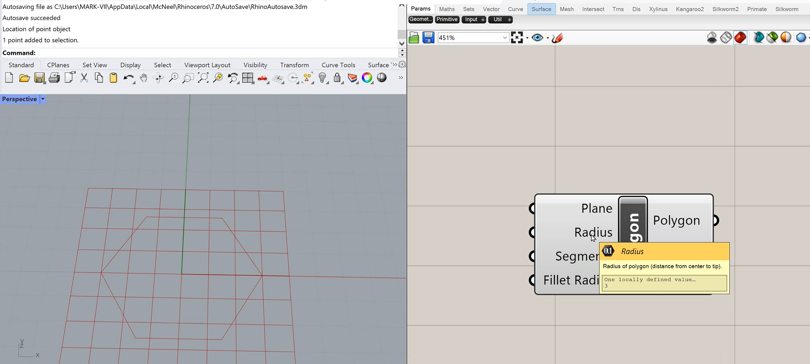

Courtenay's Assignment 2!

Being unfamiliar with Grasshopper and still very new to Rhino, I watched another tutorial given by our terrific teaching assistant, Junchao, on how to model parametric objects and bake them in Rhino. Following along in the tutorial, I started trying to follow his steps to design a new parametic polygon shape in digital form. I didn't get very far before realizing that my model wasn't doing what I was seeing in the tutorial. I had some kind of issue using the "_Polyline" command, and consequently, I couldn't figure out how to define the edge of my polygon and then extrude it properly before moving to the next step! Below I've documented my work so far, and I will keep trying!
Rhino 7 file (first baked object)
 Grasshopper work-in-progress (first definition)
Grasshopper work-in-progress (first definition)
With some luck and perseverance, I'll be able to get to print and test my new parametric, laser-printed shapes this week, finalize the design, print 30, and then assemble them into a new form. After that I'll finish my documentation process!
{kind=link}